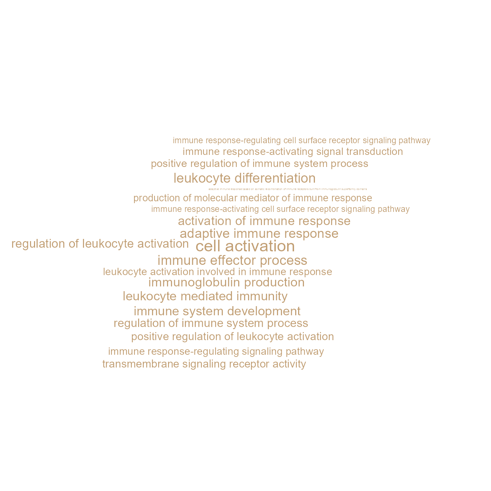
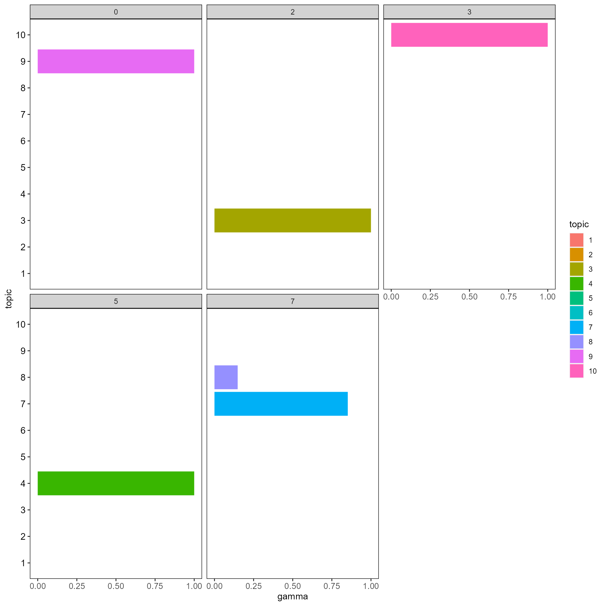

vignettes/topicmodel_visualization.Rmd
topicmodel_visualization.Rmd
library(CellFunTopic)
library(magrittr)First, please make sure that you have previously performed the pre-processing and GSEA steps, see Pre-processing.
Latent Dirichlet Allocation (LDA) is a Bayesian mixture model,
initially developed for the analysis of text documents.
CellFunTopic provides a method to fit an LDA model to
the clusters-by-pathways matrix derived from GSEA, where each cluster is
considered as a document, pathway enrichment score(log-transformed) as a
token in the document, and each pathway is considered as a word.
CellFunTopic infers the topic probability distribution by decomposing
the clusters-by-pathways matrix into clusters-by-topics (θ)
and topics-by-pathways (ϕ) matrices, that is, (1) the
probability distributions over the topics for each cluster in the
dataset (θ) and (2) the probability distributions over the
pathways for each topic (ϕ). These distributions indicate,
respectively, how important a regulatory topic is for a cluster
(θ), and how important pathways are for the regulatory
topic (ϕ). We assume that each cluster can be represented
as a mixture of latent topics, which reveal cellular programs shared
across cell types or exclusive to a particular cell type.
Actually, CellFunTopic provides two metrics, log-likelihood and perplexity, to determine the optimal number of topics. But we recommend a customized number of topics such as the number of cell types in scRNA-seq data, in order to improve biological interpretability.
k <- length(unique(Seurat::Idents(SeuratObj)))
# if k=NULL, the optimal number of topics will be calculated automatically according to log-likelihood and perplexity.
SeuratObj <- runLDA(SeuratObj, by = "GO", k = k, method = "VEM", SEED = 1234, plot = F)
# save object for later use.
save(SeuratObj, file = "SeuratObj.RData")CellFunTopic provides a few methods to visualize topic modelling results.
ldaOut <- SeuratObj@misc$ldaOut
betaDF <- tidytext::tidy(ldaOut, matrix = "beta")
pws <- ID2Description(SeuratObj, by = "GO")
betaDF %<>% dplyr::mutate(descrip=unname(pws[term]))
gammaDF <- tidytext::tidy(ldaOut, matrix = "gamma")
# Show topic distribution on UMAP/TSNE cell map
topicProb(SeuratObj, reduction="umap", topic=3, pointSize=0.1)
# echart4r network showing top terms of topics with tooltips showing description of pathway ID
topicNW3(betaDF, topn=10, pws = pws)
# Heatmap showing probability between topics and clusters
cluster_topic_hmp(ldaOut)
# Sankey diagram showing the best assigned topic of each cluster
plot_sankey(gammaDF, topn=1)
# word cloud of top terms of topic
wordcloud_topic(betaDF, pws, topic=3, topn=20)
# 3D word cloud of top terms of topic
wordcloud_topic_3D(betaDF, pws, topic=3, topn=20)
# Heatmap showing cosine similarity between topics
cosineheatmap(ldaOut)
# Heatmap showing cosine similarity between clusters
cosinehmp_cluster(ldaOut)
# Network showing cosine similarity between clusters
cosine_network_cluster(ldaOut, layout="fr", cos_sim_thresh=0.02, SEED=123, radius=0.12, width_range=c(0.1, 0.8))
# Network of cosine similarity between terms
cosine_network_term(SeuratObj, cosine_cal_by = "Topic modeling", pie_by = "Topic modeling", GSEA_by = "GO",
topn = 10, layout = "fr", cos_sim_thresh = 0.8, radius = 0.1, text_size = 2)
# UMAP on cluster-topic probability matrix
umap_cluster(ldaOut)
# Show top terms of each topic
Topterms_Topic(betaDF, Topic = 3, topn = 10, text.size = 3)
# barplot to show top terms of every topic
hist_topic_term(betaDF, topics=c(1,2,3,4), topn=20, axis.text.y.size=3)
# barplot to show probability of assigned topics in clusters
hist_cluster_topic(gammaDF, clusters=head(Seurat::Idents(SeuratObj)))